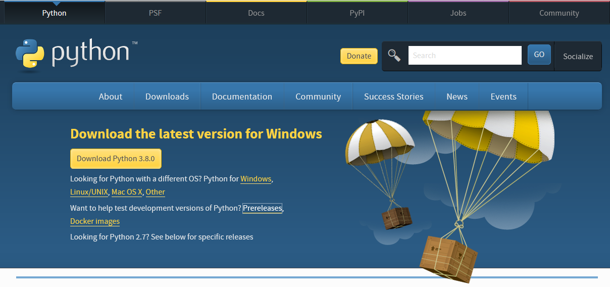
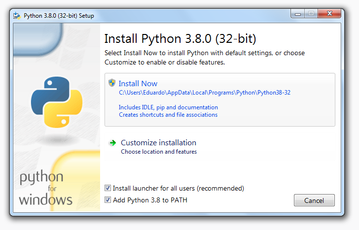
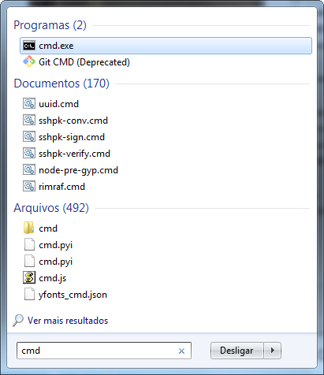
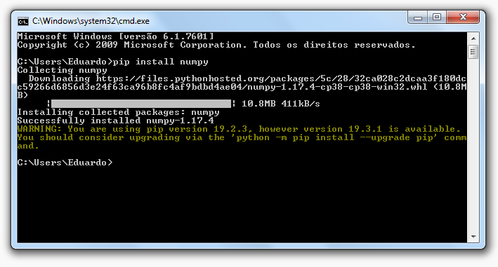
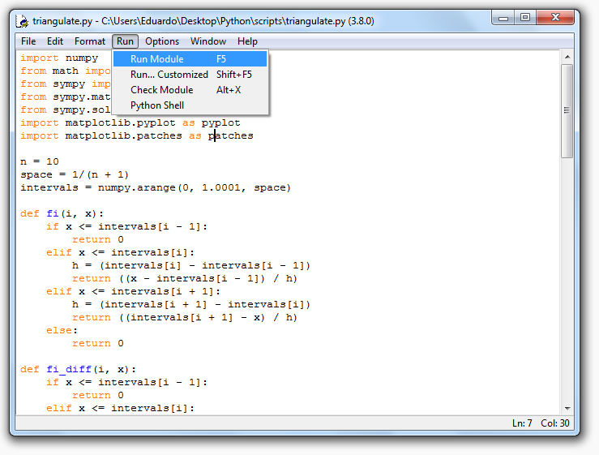
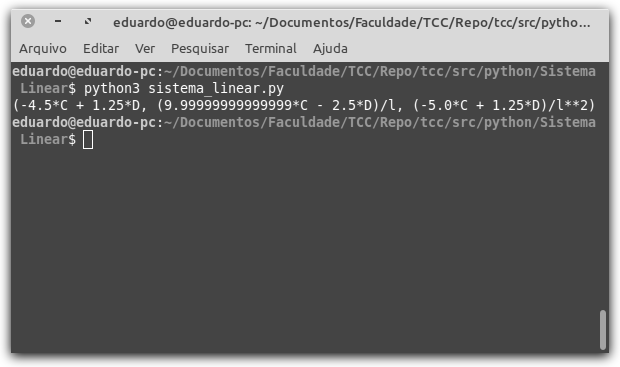

Durante o trabalho, são utilizados trechos de códigos na linguagem Python. Para auxiliar a introdução nesse universo, é apresentado aqui, uma breve explicação sobre sua instalação e execução de programas. Na última seção, é apresentado o código utilizado para a resolução de sistemas lineares na linguagem.
A linguagem de programação Python é distribuida gratuitamente e pode ser baixada no seu site1. É necessário ressaltar, também, que em distribuições Linux, como o Linux Mint, a linguagem geralmente já vem instalada por padrão. Devido a isso e, também, ao fato de que usuários de ambientes Linux costumam ter conhecimentos avançados sobre instalação de programas, será explicado nessa seção apenas a instalação no sistema operacional Windows.
O executável da linguagem Python pode ser baixado em seu site, na aba Downloads, como pode ser visto na Figura C.1.

Sua instalação é extremamente simples e rápida. Basta executar o instalador baixado da página da Figura C.1, marcar a opção "Add Python 3.8 to PATH", como na Figura C.2 para facilitar a execução de códigos com a linguagem e clicar em Install Now, isto é, instalar agora e esperar até que a instalação termine.

Após a instalação da linguagem, é necessário instalar alguns pacotes utilizados aqui neste trabalho. Para tanto, é preciso executar o prompt de comandos do Windows, ou terminal em distribuições Linux. No Windows, basta digitar cmd na barra de pesquisa do menu iniciar, como na Figura C.3.

Com o prompt de comandos aberto, deve-se executar o código pip install numpy para instalar o pacote numpy. Após a instalação, uma janela parecida com a Figura C.4 deve ser vista. Esse mesmo processo deve ser repetido com os comandos pip install sympy para instalar o pacote sympy e pip install matplotlib para instalar o pacote matplotlib. Esses três pacotes são utilizados durante este trabalho.

Para executar programas, ou scripts, na linguagem Python, existem diversas formas, sendo a mais convencional delas executar via o prompt de comandos do Windows ou no terminal do Linux. No Windows pode-se utilizar o ambiente de desenvolvimento que é instalado junto a linguagem, chamado de IDLE. Ao abri-lo, deve-se ir no menu File e, então, em New File para criar um novo arquivo. O código deve ser escrito nesse novo arquivo e salvo. Para executar este código basta, então, ir no menu Run e, depois, em Run Module, como na Figura C.5.

A segunda forma, indicada para usuários que detenham um nível de conhecimento mais alto sobre sistemas operacionais, é executar, no prompt de comandos ou no terminal a linha python arquivo.py, onde arquivo.py representa o caminho para o arquivo no sistema. Por exemplo, como os códigos deste trabalho foram desenvolvidos em um ambiente Linux, todos os códigos foram executados deste modo.
Para facilitar o entendimento dos códigos ao longo do trabalho, é apresentada uma lista com algumas das principais operações aritméticas na linguagem Python na Tabela C.1.
| Operação | Descrição |
|---|---|
| \(x + y\) | Soma de \(x\) e \(y\) |
| \(x - y\) | Subtração de \(x\) por \(y\) |
| \(x * y\) | Produto de \(x\) por \(y\) |
| \(x / y\) | Divisão de \(x\) por \(y\) |
| \(x\) // \(y\) | Parte inteira da divisão de \(x\) por \(y\) |
| \(x\) % \(y\) | O resto da divisão de \(x\) por \(y\) |
| \(x\) ** \(y\) | \(x\) elevado a potência \(y\) |
O sistema linear com matriz aumentada pode ser facilmente resolvido utilizando métodos trabalhados em Álgebra Linear, como, por exemplo, o método de Gauss-Jordan, de forma manual. Outra forma de se resolver o sistema é fazendo o uso da linguagem de programação Python, através do comando linsolve que utiliza o método de Gauss-Jordan.
Deste modo, seja, o sistema com matriz aumentada
Para a resolução do sistema usando Python é necessário, primeiro, importar alguns componentes da biblioteca SymPy:
from sympy import symbols, Matrix
from sympy.solvers import linsolveSerão importados os componentes symbols para permitir a definição de símbolos matemáticos, Matrix para a manipulação de matrizes e, finalmente, linsolve para a resolução de sistemas lineares.
Para a definição do sistema, utilizaremos os mesmos símbolos, \(l\), \(C\), e \(D\), que são definidos, dentro da linguagem, utilizando o comando symbols importado:
l, C, D = symbols('l C D')A matriz aumentada é definida utilizando o componente Matrix importado. Cada uma de suas linhas é escrita como um Array contendo os elementos das colunas. A matriz é escrita, então, como um Array de linhas.
A = Matrix([
[2, 3 * l , 4 * l**2 , C ],
[1, 2 * l , 3 * l**2 , C/2],
[8, 18 * l, 144 / 5 * l**2, D ]
])A resolução do sistema é feita pelo método linsolve já importado. O método linsolve da linguagem Python utiliza o método de Gauss-Jordan para a resolução de sistemas lineares \cite{SymPy}. Primeiro, definimos três novos símbolos, \(a_1\), \(a_2\) e \(a_3\) que são as incógnitas do sistema e então, executamos o método passando como argumento a matriz \(A\) definida e os símbolos.
a2, a3, a4 = symbols("a2 a3 a4")
sol, = linsolve(A, [a2, a3, a4])
print(sol)
O comando print(sol) exibe a solução do sistema linear, como um Array (Veja Figura C.6). O primeiro valor do Array corresponde a incógnita \(a_2\), o segundo valor a \(a_3\) e o último valor a \(a_4\). Assim, \(a_2=-4.5C+1.25D\), \(a_3=\dfrac{1}{l}(10C-2.5D)\) e \(a_4=\dfrac{1}{l^2}(-5C+1.25D)\). Pode-se converter os números decimais para frações obtendo
Substituindo \(C\) e \(D\), de e , em , e e simplificando os valores obtem-se a solução do sistema
O código completo utilizado para a resolução do sistema linear com matriz aumentada é apresentado em Código C.1.
from sympy import symbols, Matrix
from sympy.solvers import linsolve
l, C, D = symbols('l C D')
A = Matrix([
[2, 3 * l , 4 * l**2 , C ],
[1, 2 * l , 3 * l**2 , C/2],
[8, 18 * l, 144 / 5 * l**2, D ]
])
a2, a3, a4 = symbols("a2 a3 a4")
sol, = linsolve(A, [a2, a3, a4])
print(sol)